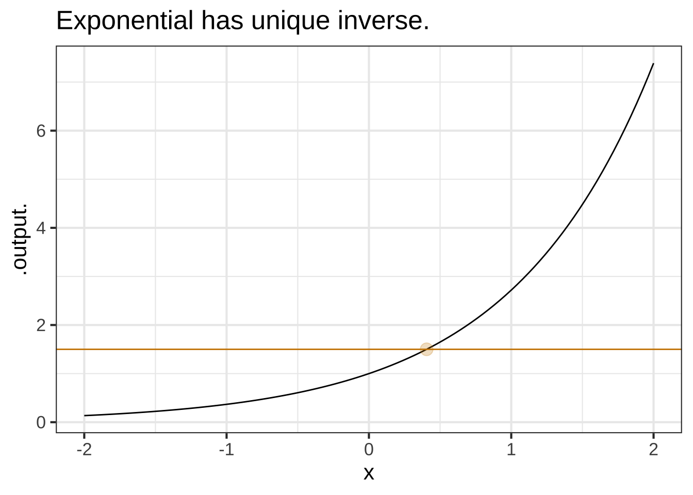
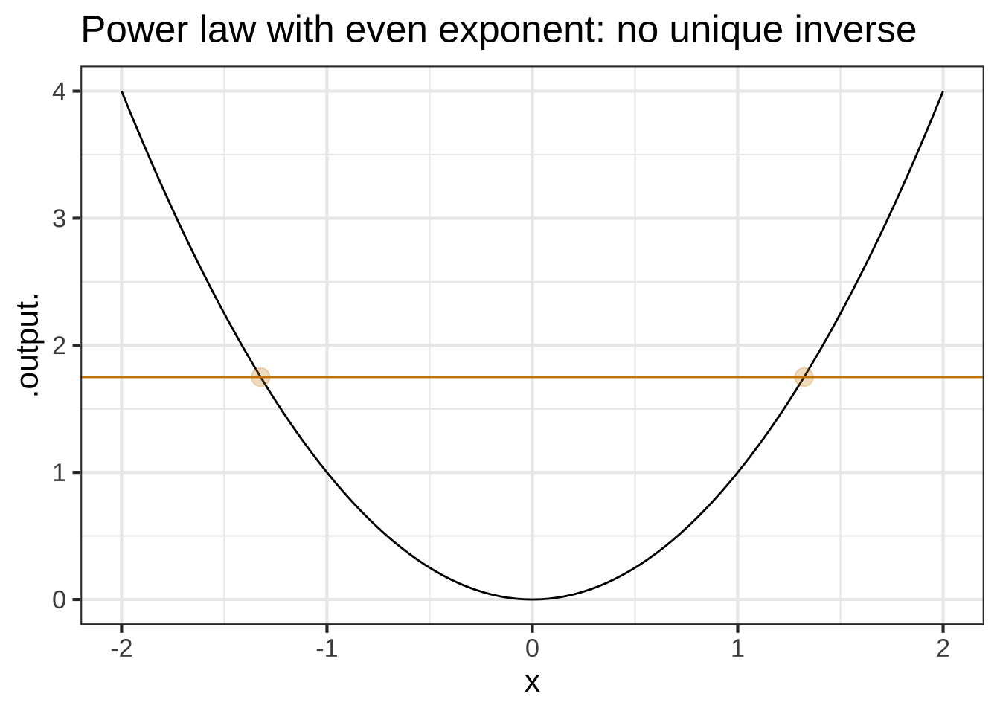
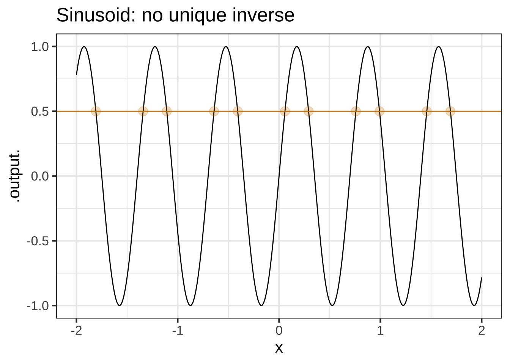
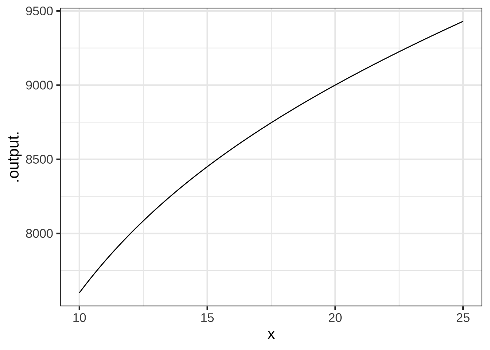
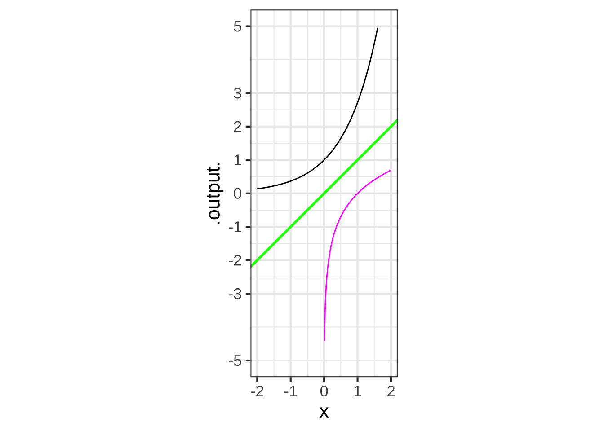
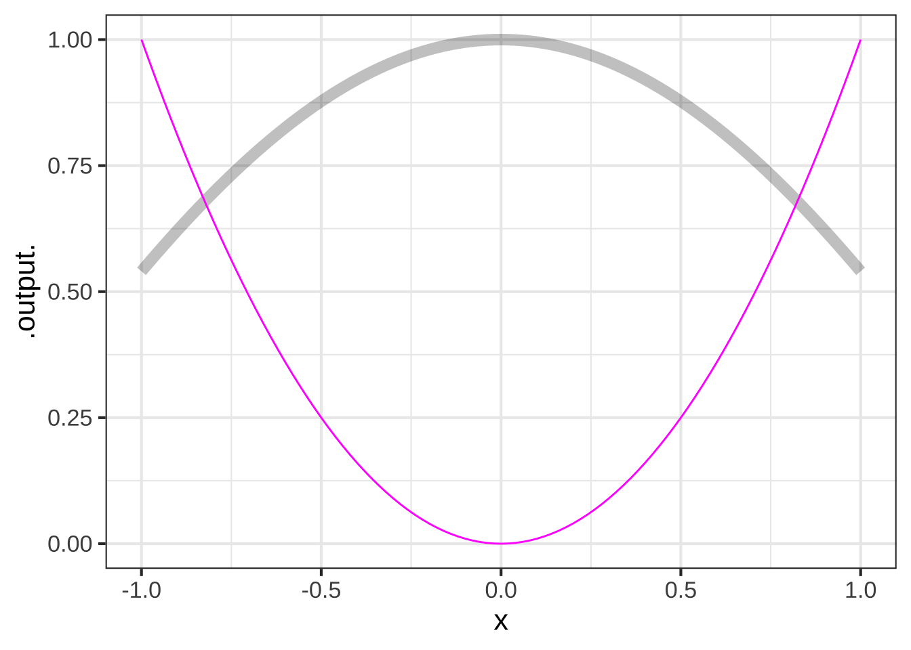

Chapter 10 Function inverses and “solving”
Very much in the spirit of naming common tasks, the process of turning an output from a function into the corresponding input is called solving. In high-school mathematics, you may have heard the phrases “solve for \(x\)” or “find \(x\).” Generally what was mean can be expressed using functions this way: Given an output \(g(x_0)\) find the input \(x_0\) that would produce that output.
In computer programming, “solving” is sometimes called zero finding. As is often the case, computer programming often involves re-arranging things to fit in a standard format. Here, the standard format is to find the input that corresponds to an output of zero. In other words, given only the output \(A = g(x_0)\) and not \(x_0\) itself, find a value for \(x_0\) that satisfies look for the input \(x_0\) at which \(g(x_0) - A = 0\).
10.1 Function inverses
This may sound like a familiar word problem from your high-school algebra course:
You are a facilities manager for a small town. The town contains approximately 400 miles of road that must be plowed following a significant snowfall. How many plows must be used in order to complete the job in one day if the plows can travel at approximately 7 miles per hour when engaged? — Source
The task of answering such a question is often called solving a word problem.
You don’t need calculus to solve this problem, but insofar as the format is familiar to you, it might help to depict how it would be addressed as a modeling task and how to use the model created to guide the mathematical work of getting a numerical answer to the problem.
Modeling Phase: The objective is to create a function that represents snow plowing and that will let us answer the question about how much plowing activity is needed. Here’s a function that takes as input \(x\) a number of plows and provides as output the number of miles that can be serviced in a day. \[\text{miles.plowed}(x) \equiv 7 \ \text{mph} \times 24 \ \text{hours-per-day}\times x\ \text{plows}\] In reality, “miles plowed” depends on the amount of snow, the safe speed limit of the plows, the number of rest breaks needed by the drivers, how far the snowplow terminus is from the road system, how many cars are parked on the road and the available number of tow trucks, and the day of the week and the time of day. (Remember, there might be other traffic on the road. Plowing at rush hour is bound to be slow! And the reduced visibility at night calls for extra care!) It seems that textbook “word problems” never mention such issues, having been written in a world where plowing snow is exactly the same as doing simple arithmetic.
Likely, we’re going to have to use the modeling cycle to end up with a genuinely useful model. Still, we have to start somewhere, so let’s start with \(7 \times 24 \times x\).
We can use this function to solve the problem: How many plows are needed to get the 400-miles of road serviced in 1 day? It’s a matter of choosing a suitable method for applying the function to guide us to the answer.
One simple method, which sometimes is called guess and check is to propose some answers and see what happens. Being experts in snow plowing, we know that you can’t have negative or fractional plows, so our guesses for \(x\) will be integers. Let’s do this systematically:
| Number of plows \(x\) | Miles plowed in a day |
|---|---|
| 1 | \(7 \times 24 \times 1 = 168\) |
| 2 | \(7 \times 24 \times 2 = 336\) |
| 3 | \(7 \times 24 \times 3 = 504\) |
| 4 | \(7 \times 24 \times 4 = 672\) |
| \(\vdots\) | … and so on. |
We really don’t need all the scratch work crowding up the table, so let’s streamline it, keeping the essentials:
| input \(x\) | output \(\text{miles.plowed}(x)\) |
|---|---|
| 1 | 168 |
| 2 | 336 |
| 3 | 504 |
| 4 | 672 |
The domain of the miles_plowed() function is \(x = 0, 1, 2, 3, \ldots\), so our table covers only a bit of the domain.
Our purpose in constructing miles_plowed() is not to figure out the output given the input, but to do the opposite: given the output, find the input. The information we have is in the form of the output: 400 miles. The mathematical operation of solving consists of looking up what we do know in the output column of the table, then reading off the corresponding input as our answer. Since 400 doesn’t appear in the output column, we’ll look for an interval that includes 400. Of course, that’s the interval from 336 to 504. So the answer will be something bigger than \(x=2\) but doesn’t need to be any larger than \(x=3\). You’ve been in the facilities management business for many years, so you know to choose the answer \(x=3\).
If you have a graph of a function, it can be easy to calculate what the input should be for a given output. Just reverse the finger action, looking up the output on the vertical axis, tracing horizontally to the function graph, then reading off the result from the input axis.
Now let’s write the problem using math notation rather than a table. We’re looking for a value of \(x\) such that \[\text{miles.plowed}(x) = 400\] This is an equation as opposed to a function definition. We write equations with \(=\) and definitions with \(\equiv\). The point of writing equations is often to signal to us that the task is to “solve for \(x\).”
An algebraic solution relies on replacing miles_plowed(\(x\)) with the function’s formula and then re-arranging numbers and possibly other symbols until we have an equation of the form \(x = \ldots\). Here, that’s easy:
\[7 \times 24 \times x = 400\ \ \implies\ \ x = 400/(7\times 24)\]
Apply some arithmetic and we find \(x = 2.381\). Apply some common sense and we translate this into “three plows.”
An industrious facilities manager might go further. “Today there is 400 miles of road. But next year there will be more, although I don’t yet know the exact number. While I’m doing all this math work, I’ll write up a memo with a formula so that next year, when I know how much road there will be, my assistant can find the answer with simple arithmetic.”
You likely learned how to set up and solve the manager wants to put in her memo. The key is to replace 400 with a symbol standing for the number of miles of road. We’ll use \(M\). Then you do the re-arrangement with \(M\) in place of 400.
\[7 \times 24\, x = M\ \ \implies\ \ x = M/168\]
All that remains is to give a more informative name in place of \(x\) and to write it as a proper function: \(n_{plows}(M) \equiv M/168\).
This process of starting with a function like \(\text{miles.plowed(x)}\) and transforming it into a function in a more convenient format for the task at hand \(n_{plows}(M)\) is called inverting the function.
High-school algebra emphasizes techniques for inverting functions by moving symbols around. This is great when it can be done, but it’s often impossible in real science and engineering problems. The guess and check method that was used in the snowplow mileage table is very simple. particularly when it’s paired with a process for refining the guess after every check. Newton’s method is one such method, it makes use of the idea of slope functions introduced in Block 2.
Another common strategy for inverting functions that are beyond our own reach algebraically is to rely on a specialist to develop the inverse function, give it a name, write down a formula in mathematical notation or, sometimes more usefully, write a computer program that implements the inverse function’s algorithm. With this strategy, all that’s needed to invert a function is to know the name or formula of the function’s inverse. Here’s a table of such names and formulas, most of which is likely familiar to you.
| function | inverse function |
|---|---|
| Exponential: \(e^x\) | Logarithm (“natural”): \(\ln(x)\) |
| Exponential: \(2^x\) | Log base 2: \(\log_2(x)\) |
| Exponential: \(10^x\) | Log base 10: \(\log_{10}(x)\). |
| Power law: \(x^2\) | Square root/power-law: \(\sqrt{x} = x^{1/2}\) |
| Power law: \(x^{-1}\) | Power law: \(x^{-1}\) |
| Trig: \(\sin(x)\) | Trig: \(\arcsin(x)\) |
| Trig: \(\tan(x)\) | Trig: \(\arctan(x)\) |
You can of course read this table either from left to right or from right to left. For instance, the inverse of \(\ln(x)\) is \(e^x\).
As you know, for a function \(g(x)\), the set of valid values of \(x\) is called the domain of the function. The set of possible outputs from the function is called the range of the function. The inverse function to \(g()\) has a domain which is the range of \(g()\) and a range which is the domain of \(g()\).
Sometimes the notation \(g^{-1}(x)\) is used for "the inverse function of \(g()\). This is potentially confusing, since \(g^{-1}(x)\) might reasonable be interpretted as \(1/g(x)\) and, in general, those two things are not equal.
Straight-line (with non-zero slope), exponential (\(e^{kt}\) where \(k\neq 0\)), and logarithm functions aways have inverse functions. For power-law and sinusoid functions, there can be several (or many) different inverse functions. We’ll get to this when we need to.
There’s an easy graphical test for whether there is a unique inverse function or not. Draw the graph, then see if any horizontal line touches the graph of the function in more than one place. If so, there is no unique inverse function.

10.2 Solving graphically
Most readers are familiar with the sort of high-school math problem where you are presented with an equation written in terms of \(x\) and asked to “find \(x\)” or “find the solution.” For instance, the problem might be
\[\text{Let}\ \ 3x - 2 = 7 x^2 .\ \ \ \text{Find} \ x .\]
The above problem falls into one class of such tasks, the class of “finding roots of polynomials.” Here’s another problem in that same class:
An investment club decided to buy $9000 worth of stock with each member paying an equal share. But two members left the club, and the remaining members had to pay $50 more apiece. How many members are in the club?16
Let’s pose the problem in terms of a function, money_raised\((x)\) where \(x\) is the original number of members in the investment club. Originally, the members were each going to pay \(9000/x\). But after the two people drop out, each of the remaining members has to pay \(9000/x + 50\). Since there are \(x-2\) remaining members, the total amount raised is \[\text{money.raised}(x) \equiv (x-2) \left(\frac{9000}{x} + 50\right)\] Figure ?? graphs \(\text{money.raised}(x)\)
money_raised <- makeFun((x-2)*(9000/x + 50) ~ x)
slice_plot(money_raised(x) ~ x, domain(x=c(10,25))) The function tells us, for any number of members \(x\), how much money will be raised. So what’s \(x\) for the club? The function doesn’t tell us … until we add in a new fact. The club raised $9000. So look up $9000 on the vertical axis, trace horizontally over to the graph, and read off the resulting input that generates an output of $9000.
This inverse way of using functions—we know the output and we need to calculate the input—is very common. One reason is that sometimes it’s relatively easy to construct a model that takes input \(x\) to an output, but the problem at hand is to figure out from a value of the output what is the corresponding value of the input.
Seismograms and electrocardiograms
Suppose that you have a function \(f(x)\) and you also know the inverse of that function. We’ll call the inverse \(g(x)\) for this example, but a more typical notation is \(f^{-1}(x)\) where the function name is \(f^{-1}\).
Composing a function and its inverse gives back the input: \(f(g(x)) = x\) and \(g(f(x)) = x\).
As part of your high-school mathematics education, you learned the inverses to several functions. For instance, \(e^x\) and \(\ln(x)\) are inverses, meaning that \(\ln(e^x) = x\) and \(e^{\ln(x)} = x\). The identity function is its own inverse. The inverse of the square function is the square root: \(\sqrt{x^2} = x\) and \((\sqrt{x})^2 = x\).
It’s helpful to keep in mind that if you have a function \(f(x)\) there is some other function—although you may not know its form yet—that is the inverse to \(f()\).
There are two caveats:
Mathematicians will say that for functions like \(\sin(x)\) or \(\dnorm(x)\) which fail the horizontal line test the inverse does not exist. That’s because mathematicians want the inverse to have a single, unique value, while functions like \(\dnorm()\) have two inputs that generate any output in the function’s range. \(\sin()\) has an infinite number of inputs that generate any output in the function’s range.
But in practice, the problem is to find some input that will generate the known output. If there is more than one such input, we just have to choose one.
We can even satisfy the mathematician’s insistence that there be a unique inverse if we restrict the domain of the forward function to a region where it is monotonically increasing or monotonically decreasing.
There is always an algorithm to that can be applied to find a solution to any inverse problem. But this algorithm is rarely a simple formula. Not having a formula, we play a name game. For instance, the inverse of the square function is called the “square root,” but there is no simple formula for finding the square root of a number. Similarly, the inverse to \(\sin(x)\) is called \(\arcsin(x)\), but there is no simple formula for \(\arcsin()\). Almost invariably we use such inverse functions not by doing arithmetic to calculate their output, but by using a calculator button or a software function that carries out the algorithm.
For now, it suffices that you can compute the inverse to any function (over some sub-domain where the function is monotonically increasing or decreasing) by graphing the function and then reading from the vertical axis to the horizontal. As we encounter more concepts from calculus and computing, we’ll develop additional methods for evaluating an inverse function without first having to construct that function.
10.3 Zero-finding
Zero-finding is the name of a process for finding a function input that produces a function output of zero. Usually, zero isn’t a an output value of interest. (If the snow-plow manager asked her assistant to figure out how many plows are needed to cover 0 miles in one day, the assistant would wonder if someone has lost their mind.)
However, any solving problem can be translated into a zero-finding problem. For example, if the problem is to solve \(g(x) = M\), we can equally well state the problem as finding a zero of \(h(x) \equiv g(x) - M\).
Why would anyone want to do this?
Often, mathematical algorithms in computer languages are written to accept a function as an input rather than an equation. For instance the R/mosaic operator findZeros() takes as it’s primary argument a tilde expression describing a function.
For example, the investment-club problem given earlier in this chapter can be re-stated as a zero-finding problem.
money_raised <- makeFun((x-2)*(9000/x + 50) ~ x)
findZeros(money_raised(x) - 9000 ~ x)## x
## 1 -18.0000
## 2 -0.0001
## 3 20.0000It turns out that there are three zeros for `money_raised(x) - 9000$. Only one of them has any sensible interpretation as the number of investors in the club.
10.4 Exercises
Exercise 10.1:  IWLDN1
IWLDN1
The graphs of functions and their inverses are related by a flip around the line of identity, shown in green in the following graph.

The black curve is the graph of \(e^x\).
Question A Is the magenta curve the graph of a function? (Hint: Does it pass the vertical line test?)
- YesExcellent!
- No︎✘ The magenta curve has a vertical asymptote at \(x=0\), but since it never reaches that asymptote, it passes the vertical line test.
Question B Which of these functions is graphed in magenta?
- \(1/x\)︎✘
- \(\ln(x)\)Good.
- \(\sqrt{x}\)︎✘
- \(e^{-x}\)︎✘ Sorry, but this would be the reflection of the black curve around the vertical line at \(x=0\)
- \(-e^{x}\)︎✘ No. This would be the reflection of the black curve around the horizontal line at output \(f(x)=0\)
Exercise 10.3: 1kZXxT
Consider the problem of finding a value of \(x\) such that \(cos(x) = x^2\). This is easy to do graphically: find the input where the graphs of \(cos(x)\) and \(x^2\) cross.

In a sandbox, create a function \(h(x)\) that is zero when the equation is satisfied. Pass the tilde expression h(x) ~ x to the R/mosaic findZeros() operator to find a precise numerical answer to the problem:
h <- makeFun( __define_your_h_function__ )
findZeros(h(x) ~ x)